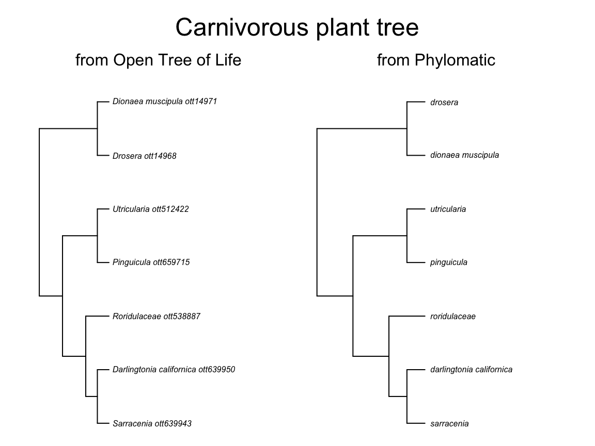

vignettes/rphylotastic.Rmd
rphylotastic.Rmdrphylotastic connects to Phylotastic web services, which themselves wrap and process multiple other services as well as have unique services of their own.
You first need to install and load the package:
CRAN version:
Or development version:
Then load the package:
The main use for rphylotastic is getting phylogenetic trees for a set of taxa of interest. Trees can come from Open Tree of Life (topology only, many polytomies), Phylomatic (has branch lengths, but only plants and mammals), or NCBI taxonomy (even more polytomies than Open Tree’s tree). See also the treebase and rotl packages for getting individual trees, or datelife for getting chronograms (a single synthetic one or individual ones).
Would you like to know about north american endemic carnivorous plants and their relationship to other plants with the same behaviour? The venus flytrap (Dionaea muscipula), pitcher plants (Sarracenia genus) and the cobra lily (Darlingtonia californica) can only be found in North America. The popular Drosera sundues, Pinguicula butterworts and the aquatic carnivorous Utricularia bladderworts, have a wider range of distribution. What are their phylogenetic relationships?
# http://floranorthamerica.org/files/imported/Outreach/FNAfs_carnivory.pdf
taxon_names <- c("Dionaea muscipula", "Sarracenia", "Darlingtonia californica",
"Drosera", "Pinguicula", "Utricularia", "Roridulaceae")
phy1 <- taxa_get_otol_tree(taxa = taxon_names)
# > Warning in checkTree(object): Tree contains singleton nodes.
# > Warning in checkTree(object): Tree contains singleton nodes.
# > Warning in asMethod(object): trees with unknown order may be unsafe in ape
# phy1 <- taxa_get_phylomatic_tree(taxa = c("elephas maximus", "felis silvestris", "homo sapiens"))
phy2 <- taxa_get_phylomatic_tree(taxa = taxon_names)
# phy3 <- taxa_get_taxonomic_tree(taxa = taxon_names) # this service is giving Error in open.connection(con, "rb") : HTTP error 500. (2018.06.21)
source_tree <- c("Open Tree of Life", "Phylomatic")
# source_tree <- c("Open Tree of Life", "Phylomatic", "NCBI taxonomy")
trees <- c(phy1, phy2)
# trees <- c(phy1, phy2, phy3)
library(ape)
par(xpd = FALSE, mfrow = c(1, length(trees)), mai = c(0.1, 0.1, 0.5, 0.1), oma = c(0, 1, 2, 1))
for (i in 1:length(trees)){
plot(ladderize(trees[[i]]), cex = 0.5, label.offset = 0.3)
mtext(paste("from", source_tree[i]), cex = 1, side = 3, line = 1)
}
mtext("Carnivorous plant tree", outer = T, side = 3, cex = 1.5, line = 0)
With rphylotastic, you can also check if any two trees are exactly equal.
One very cool feature of rphylotastic is the ability to scrape scientific names from documents or web pages. For example, you can get all latin names from a wikipedia article on primates:
# names_url <- url_get_scientific_names(URL = "https://en.wikipedia.org/wiki/Primate") # this was failing 2018.09.17
# length(names_url)
# head(names_url)You can also extract all scientific names from a text you are studying, that you can insert as a character vector into R if it is short:
names_text <- text_get_scientific_names(text = "The domestic cat (Felis silvestris catus or Felis catus) is a small, typically furry, carnivorous mammal.")
head(names_text)
# > [1] "Felis silvestris catus" "Felis catus"or get from a file in your compputer if i=the text is too long:
If you are interested in a particular group, and you want to get a tree containing all species within the group, function taxon_get_species will get you a vector of all species registered in Open Tree of Life taxonomy for that group. You can then use that vector to perform a tree search.
ant_species <- taxon_get_species(taxon = "Formicidae")
length(ant_species)
# > [1] 10883
head(ant_species)
# > [1] "Hypopomyrmex bombiccii" "Stigmomyrmex venustus"
# > [3] "Imhoffia pallida" "Imhoffia nigra"
# > [5] "Kotshkorkia laticeps" "Poneropterus sphecoides"
# phy1 <- taxa_get_otol_tree(taxa = ant_species)This function works to get all species from one taxon at a time. If you try with several higher-taxon names, it will give you the species for the first taxon only:
more_species <- taxon_get_species(taxon = c("Formicidae", "Felidae"))
length(more_species)
# > [1] 10883But you can use a handy apply function
more_species <- rapply(list("Formicidae", "Felidae"), taxon_get_species)
length(more_species)
# > [1] 10982Or see datelife package for a wrapper of this function accepting multiple taxon names at a time.
Species from a taxon can also be subset by country or by genome:
spp_from_country <- taxon_get_species_from_country("Formicidae", "Mexico")
length(spp_from_country)
# > [1] 479
head(spp_from_country)
# > [1] "Acanthoponera goeldii" "Acanthoponera minor" "Tatuidris tatusia"
# > [4] "Amblyopone orizabana" "Prionopelta modesta" "Prionopelta amabilis"
spp_with_genome <- taxon_get_species_with_genome("Formicidae")
length(spp_with_genome)
# > [1] 26
head(spp_with_genome)
# > [1] "Ooceraea biroi" "Harpegnathos saltator"
# > [3] "Dinoponera quadriceps" "Aphaenogaster picea"
# > [5] "Aphaenogaster miamiana" "Aphaenogaster fulva"You may already have a list of names, but you want to check if they all are good scientific names. rphylotastic calls Global Name Resolver (GNR) and the Taxonomic Name Resolution Service (TNRS) to verify names. This function will keep correct names only.
species <- c("Delphinus delphus", "Homo sepiens")
taxa_resolve_names_with_otol(taxa = species)
# > Success
# > Warning in taxa_resolve_names_with_otol(taxa = species): Fewer names were
# > found than were given; missing taxa were dropped.
# > [1] "Delphinus delphus"Alternatively, you can use one of the many services from rotl and taxize packages to clean your names:
library(taxize)
species_gnr <- gnr_resolve(names = species)
nrow(species_gnr)
# > [1] 32
# it is a big table. Let's subset by unique matched names, so it is easier to choose:
species_gnr[!duplicated(species_gnr$matched_name),c("user_supplied_name", "matched_name")]
# > # A tibble: 8 x 2
# > user_supplied_name matched_name
# > <chr> <chr>
# > 1 Delphinus delphus Delphinus delphus
# > 2 Delphinus delphus Delphinus delphus Linnaeus, 1758
# > 3 Homo sepiens Homo sapiens Linnaeus, 1758
# > 4 Homo sepiens Homo sapiens
# > 5 Homo sepiens Homo sapiens subsp. Denisova
# > 6 Homo sepiens Homo sapiens L.
# > 7 Homo sepiens Homo sapiens Linnaeus 1758
# > 8 Homo sepiens Homo sapiens ssp. Denisova
tnrs(query = species)
# > Calling http://taxosaurus.org/retrieve/1271ecb366fb0965eb912b46d224cae2
# > submittedname acceptedname sourceid score matchedname authority
# > 1 Delphinus delphus Delphinium iPlant_TNRS 0.48 Delphinium L.
# > 2 Homo sepiens iPlant_TNRS 0.53 Hoya serpens
# > uri
# > 1 http://www.tropicos.org/Name/40023242
# > 2On the example above, species names were matched to iPlant database only. If you look at the score, it’s pretty low (<0.6), so you can tell that this match is probably wrong.
library(rotl)
# >
# > Attaching package: 'rotl'
# > The following objects are masked from 'package:taxize':
# >
# > synonyms, tax_name, tax_rank
species_tnrs <- tnrs_match_names(names = species)
species_tnrs[,1:5]
# > search_string unique_name approximate_match ott_id is_synonym
# > 1 delphinus delphus Delphinus delphis FALSE 698438 TRUE
# > 2 homo sepiens Homo sapiens TRUE 770315 FALSEPackage brranching has a very nice function that allows choosing among multiple matches. This function is actually used in phylomatic tree searches implemented via rphylotastic function.
You can get an phylotastic! user ID by registering with your gmail address on the portal. Then, you can get a temporary token sent to you email to help you manage your lists from the R console. Here are a few examples, but they won’t work for you since th etoken expire afer a few hours.